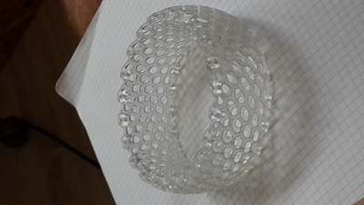

ALTERNANZA SCUOLA-LAVORO
English version
OPEN SOURCE

Il 18 ottobre la nostra classe si è recata presso Impact Hub, ossia uno spazio libero dove le persone si recano per sviluppare idee innovative individuando nuove opportunità di mercato.
Appena arrivati ci hanno fatto accomodare in una stanza nella quale ci hanno raccontato le loro esperienze e successivamente ci siamo recati nell'edificio di fronte ad Impact Hub nel quale, 2 collaboratori, ci hanno mostrato il loro progetto,
ovvero la creazione di una bicicletta innovativa formata da una lega metallica molto più leggera di una normale bicicletta e completamente personalizzabile, in modo che ogni persona si possa sbizzarrire nel creare un proprio design.
Ritornati ad Impact Hub si è iniziato a parlare di Open Source, visione diversa dell’economia dove ogni risorsa è di tutti e tutti ne possono usufruire.
L’argomento di cui abbiamo parlato per la maggior parte del tempo è stata la stampante 3D.
La stampante 3D è una macchina che utilizza un materiale(sciolto a una temperatura intorno ai 300°) che viene distribuito tramite un codice per formare l’oggetto richiesto.
Esistono 2 tipi di scansione della stampante 3D :
-La scansione laser: i laser puntano l'oggetto che vogliamo venga costruito e montano l'immagine sul computer che successivamente verrà analizzata da un software;
-La scansione con infrarossi:è resa possibile grazie a tanti pallini che vengono sparati sull’oggetto e, in base alla loro distanza, la telecamera ad infrarossi è in grado di capire com'è fatto l'oggetto.